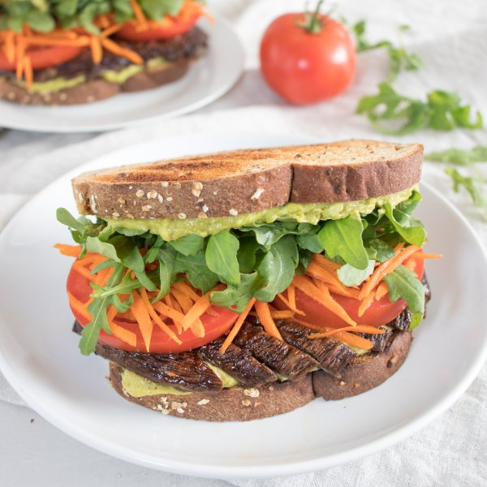

Mushroom Sandwich with Avocado-Mayo Spread, Arugula, Tomato & Carrot

Total Time
35 min
Nutrition (Per Serving)
641.3 kcalCalories
21.2 gProtein
51.6 gCarbs
41.7 gFat
Full nutrition table
| Calories | 641.3 kcal |
| Total fat | 41.7 g |
| Saturated fat | 6.3 g |
| Trans fat | 0.1 g |
| Cholesterol | 13.7 mg |
| Sodium | 389.4 mg |
| Carbohydrates | 51.6 g |
| Fiber | 14.4 g |
| Sugars | 12.3 g |
| Protein | 21.2 g |
| Potassium | 1131 mg |
| Calcium | 205.9 mg |
| Iron | 3.9 mg |
| Vitamin A | 612.7 IU |
| Vitamin C | 21.2 mg |
| Vitamin D | 11.2 IU |
Cookware
Ingredients
- 1avocado
- 1 (5 oz) pkgbaby arugula
- 2 mediumcarrots
- ½ cupnutritional yeast flakes
- 4 capsportobello mushrooms
- 2tomatoes
- 8 sliceswhole grain bread
- balsamic vinegar
- black pepper
- extra virgin olive oil
- garlic powder
- mayonnaise
- paprika
- pure maple syrup
- salt
- soy sauce
Steps
- Preheat oven to 425°F.
- Meanwhile, wash and dry the fresh produce. (Skip the arugula if it came pre-washed.)4 caps portobello mushrooms
1 avocado
2 tomatoes
2 medium carrots
1 (5 oz) pkg baby arugula - Place oil, soy sauce, vinegar, maple syrup, paprika, and pepper in a small bowl. Whisk to combine the marinade.¼ cup extra virgin olive oil
4 tsp soy sauce
4 tsp balsamic vinegar
2 tsp pure maple syrup
½ tsp paprika
⅛ tsp black pepper - Remove mushroom stems and carefully scrape out the gills. Transfer to a baking sheet pan, drizzle with marinade, and turn to coat. (Reserve bowl for later use.)
- Place mushrooms in the oven and roast until tender, 10-12 minutes. Remove from oven and set aside.
- Meanwhile, halve and pit the avocado. Slice thinly while still in skin, then scoop out into the reserved bowl.
- Add nutritional yeast, mayo, and spices to the bowl with the avocado; mash with a potato masher or fork until smooth. Set avocado mayo aside.½ cup nutritional yeast flakes
⅓ cup mayonnaise
½ tsp garlic powder
⅛ tsp salt
⅛ tsp black pepper - Slice tomatoes. Peel, trim, and coarsely grate the carrots. Transfer both to a plate and set aside.
- Toast bread if desired.8 slices whole grain bread
- Slice mushrooms into strips.
- Place bread slices on a flat surface and spread evenly with avocado mayo. Top half the slices with mushrooms, tomato, carrot, and arugula. Cover sandwiches with remaining bread slices.
- To serve, divide sandwiches between plates and enjoy!